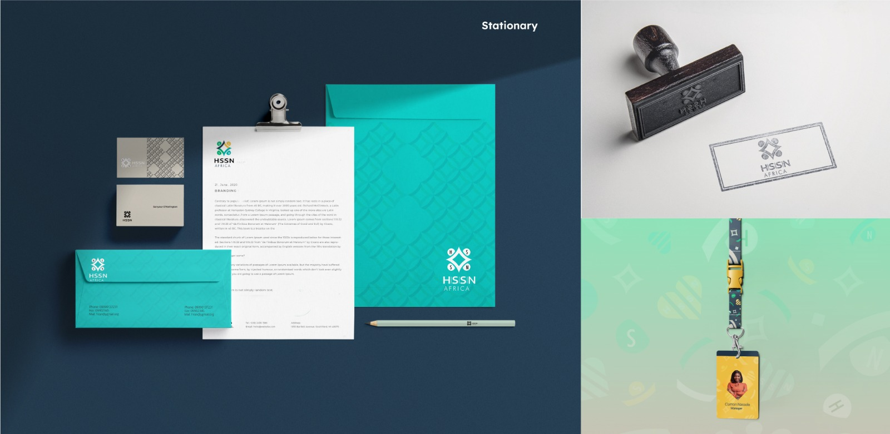

Human and Social Sustainability Network Africa is an initiative dedicated to tackling education and providing skills development to reduce unemployment, forced labour and inequalities through collaboration and innovation. The pressure was on while exploring unique ways to express and tell the story of every African youth alongside the societal issues they face everyday. I had to come up with a mark that will truly depict HSSN's goal for Africa.
I began by dissecting every keyword associated with the brand's objective to give an in-depth knowledge of how I can achieve this.
After several mind mapping and researches, I began experimenting with various visual languages to have a better direction of where I was headed to.
Sustainability
Youth
Growth
Change
Community
Diamond
Stability
After countless sketches and experimentation, I found an efficient logo concept that would fit the brand values and message. I took inspiration from the shape of a diamond to form a very simple and symbolic design. In African cultures and communities, diamonds are thought of as a symbol of balance (fairness and equality) Hence, making them serve as a perfect element to communicate this idea. This is also in line with HSSN's initiative of tackling inequalities in the society, SDGs 5&10. Using Colour psychology, the colours were derived from the meaning of the keywords, human and Social Sustainability.
Social well being of African Youths
Green :Economic growth
Blue :Fairness
I created a pattern for application on merch, stationary, interface and more. Using various abstract visual shapes, some culled from the HSSN logo. This was done to generate a highly interesting and engaging pattern that promoted Cheerfulness and hope.
The icons were designed to have some unique visual features, rounded with some stroke of lines.